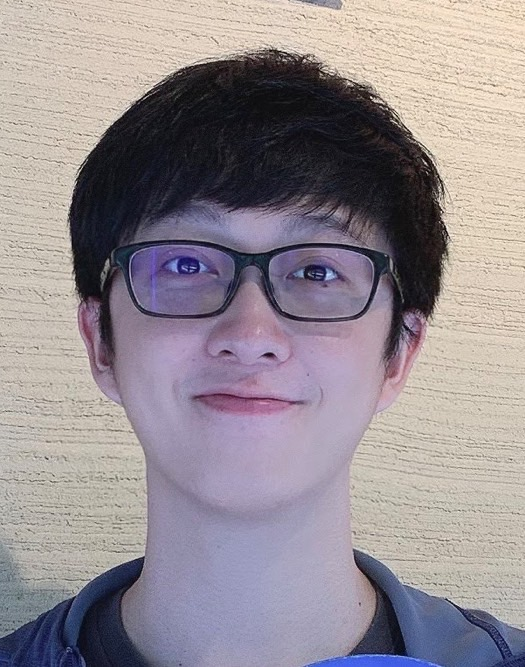

個人簡介：
我是台南人，崑山科大電機系畢業，
畢業後曾到傳產加工紙製造業擔任電機工程師，從事產線機台和廠房的維護與檢修，
但隨著工作逐漸意識到自己對於電路機構並沒有熱情，也不適合，便決定離職開始了轉職之路。
決定往軟工領域前進是因為過去高中寫C語言時就對這種建立在0與1上的純邏輯架構相當著迷，邏輯構築的創造感讓我欲罷不能。
目前打算先以前端為主，想在可以養活自己的同時學習更多，更加精進。
為什麼想成為前端、後端或全端工程師：
資訊爆量的現今就是一個User與Data的時代，而IoT又離不開Web與App，
自己作為一個User卻常常會有怎麼樣可以更好又或者為什麼不能更好，問題點在哪裡的想法，而要實現這點，就是成為一個軟體工程師。
掌握了前端UI，以及後端撈資料的能力後，就可以完成許多的有趣的應用，將腦袋裡的想法一一實現，這對於目前的我來說是一個絕佳的入門點。
想在WeHelp Bootcamp的高壓訓練下完成一定規模的作品，作為自己進入職場的門票，在職場後學習更多，持續發展。
為了成為軟體工程師，曾經做過什麼努力：
高中入門C語言，建立了變數、字元、條件、迴圈等概念，也自學了一陣子的C，和同學研究解題系統上的題目，抱團參加線上解題賽，雖然僅是參加獎一枚，但仍然獲得了許多。
為了了解一個大型專案為何失敗及其中的困難點，拜讀了《人月神話》這本專案管理經典，對於一個大型軟體專案的運行方式有了一定的概念。也曾寫過一些簡易的遊戲腳本。
近期則是以Udemy的Zero to Mastery課程為主線搭配YT上的教學資源在學習HTML,CSS,JS這些基礎起那段技術，並試著以目標導向，從零開始完成一些簡易的版面，套入自己學過的元素，培養know how，同時建立每日進度與周進度，想盡可能的在課程之前為自己打好一定基礎，爭取更多開發時間。
如果參與這個計畫，會怎麼安排學習時間：
以我來說，時間x效率=學習成果，兼顧吸收效率下，一天平均花在8-10小時，
通常3-4小時會是Udemy課程搭配同步實作加深印象，有時需要重複觀看，補充資料及額外的學習資源會花2-3小時，然後會插入1小時培養英文語感和閱讀能力，作為一個緩衝和沈澱，然後剩下的3-5小時就是回顧今天的內容並設想一個情境將其套入實作。
除了每日小回顧作為進度參考，同時也會在週六做一個周進度回顧，評估自己究竟掌握了多少，若不熟會在從先前建立的日進度回頭複習，週日會排下周進度預習並收集教學資料，同步匯入至Notion中進行編排與整理。目前到12月初持續了將近2週，週時數預計在60上下。
未來課程正式開始後，配合週一的meeting和進度與作業指派可能會有些許調整，而人住台南，還在考慮實體活動的可行性，但時數仍會維持在目前的強度，開發過程總是有數不清的變數，時間卻是可以擠出來的。
如果參與這個計畫，預期會碰到什麼困難，打算如何解決它：
目前看到相關的分享經驗，有一種是明明Html,CSS都學完了看懂了，但到了自己要從零寫出一個目標一個網頁時卻不知道從何著手的情況，
我的解決方式是會強迫自己思考構築的過程以及對其中的元素進行拆解，並且將大目標拆成小目標，再逐一完成整併。這個方法其實可以套用在許多地方，是一個很好找到著手點的方式。
是否有想加入的軟體公司，為什麼想加入該公司：
目前是以Shopee為遠目標，自己身為一個重度使用者，卻時常覺得Web端有零散破碎感，在學習的同時也會嘗試著參考或仿效，從中找出造成零碎感的因素，並尋求改進的方式或是新的版面，作為一個目標導向的錨點。
想對WeHelp說的事情：
很感謝，也很幸運有這個緣份接觸到WeHelp，還有第一屆的校友分享會，東東、浩宇、宇軒各自的心路歷程和專案內容給了我非常多的勇氣和力量，同時也為我指引了方向。
期待下半年的到來，我非常想，也已經準備好成為WeHelp Bootcamp的一員了。
希望明年可以換我跟下一屆的朋友們分享歷程、收穫、以及成果。